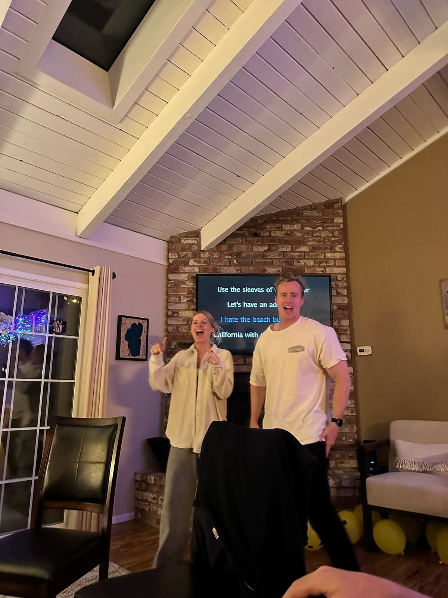

June 5, 2025 · Tahoe
The weekend we met
Tahoe was about anything but what I expected. I came for a birthday weekend and left with something much more exciting. From wearing pants to bed to a casino smooch, it was an interesting first meeting, and by the end of it, unfortunately, I was hooked.